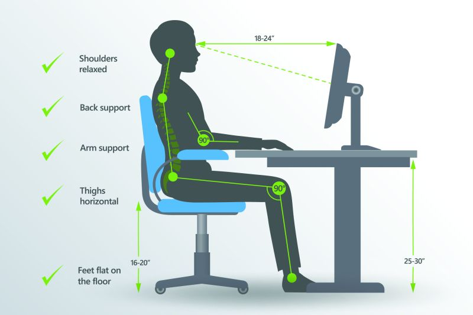
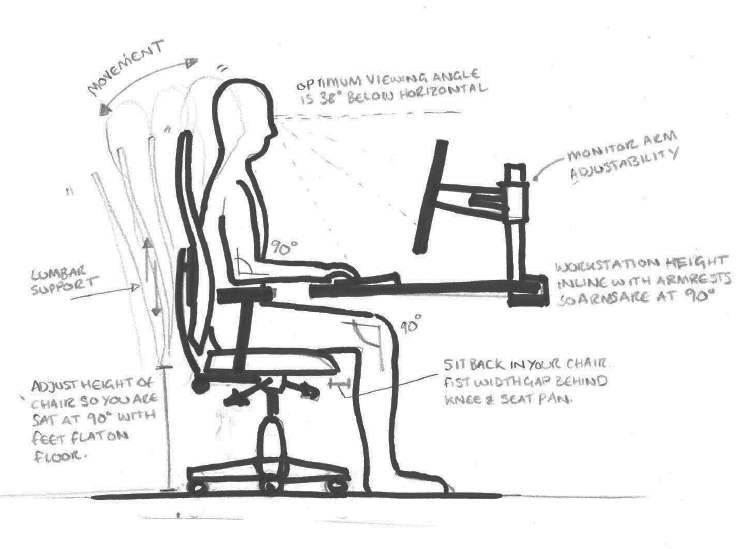

What is the Best Posture for Sitting
Design Agencyat a Desk All Day?

decreasing the stress on the spinal ligaments thus improving spine health
preventing the spine from becoming fixed in abnormal positions.
reducing wear and tear on the joints, muscles and ligaments
preventing backache and muscular pain.
What is a Good Sitting Posture?
A good sitting posture involves training our body to sit in a position where there is the least strain on your muscles and ligaments, and at the same time supported by the right amount of muscle tension while seated for a period of time. Correct sitting posture can help by:

sitting for an extended period without taking a break
sitting slanted to one side with the spine bent
dangling or not properly supporting the feet
straining the neck for long periods while looking at a monitor screen or document
sitting in a position that does not fully support the back, especially the lower back
Why should we Avoid Poor Sitting Posture?
Sitting with a poor posture, places strain on the spine and associated ligaments, and cause misalignments to the spine. Most of the back pain sufferer will admit their posture is less than ideal. Over time and repetition, the structures deform and surrounding muscles are forced to compensate, leading to chronic pain conditions. To prevent bad posture and back health we should avoid: